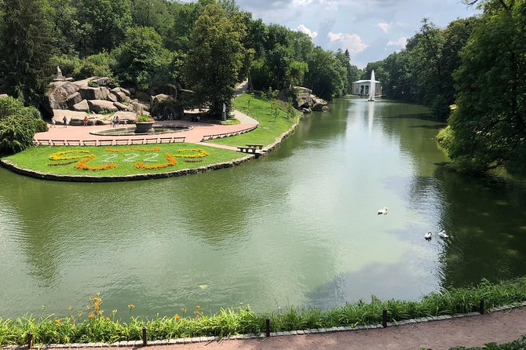
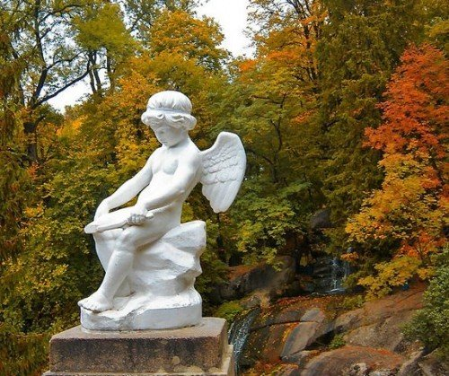
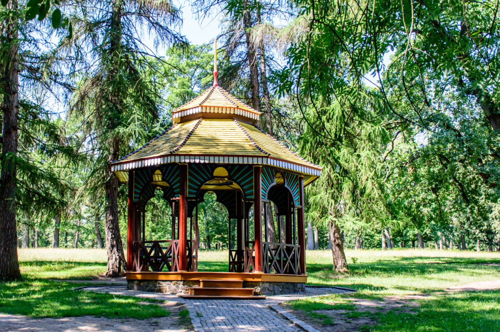
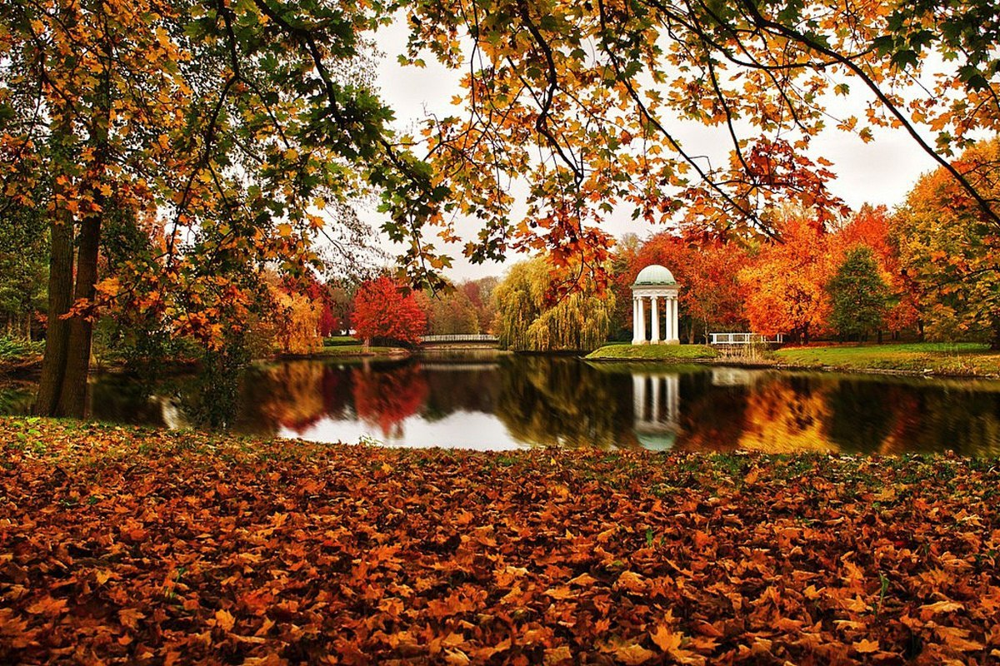

I was born and raised in a small town called Uman, located in central Ukraine. It is a beautiful town with a very rich history, and most known for Dendrological Park Sofiyivka . Every year over half a million tourists from all over the world come to Uman to visit this, as many people refer to it, "eighth Wonder of the World".
Sofia Potocka
The park was planned in 1796 by Uman’s governor at the time, the Polish Count Stanisław Potocki. Sofiyivka park was a birthday present for his Greek wife Sofia , and was named after her. Compatriots of her time wrote: "She was beautiful as a dream, a child of southern countries. All those who have seen her admire her beauty, igniting a fire in the hearts of men and envy in the eyes of women."

Sculptures
The park created in romantic style using Greek mythology. This idea belonged to Sofia who missed her native country very much. Like the Taj Mahal in India, it is a symbol of great love.

Design
Designer and contractor - Polish military engineer Ludwig Metzell gathered plants from many parts of Europe. The park is decorated with a number of sculptures, mostly antique ones, and artificial cliffs, grottoes, and gazebos.
When to visit
The Sofiyivka Park is beautiful in any season, but I always loved to visit it in fall with vibrant orange colors and cooler weather it just takes my breath away.
